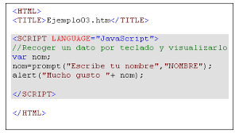

En la creación de aplicaciones web normalmente podemos hacer el uso de JS y CSS de diferentes maneras, la primera fuera de HTML y la otra dentro del archivo HTML con las respectivas etiquetas en el caso de JS el poder separar todas las funcionalidades del archivo original, esto es llamado JavaScript no intrusivo.
Entonces teniendo en cuenta esto podemos decir que JavaScript intrusivo es practicamente lo contrario, es el JavaScript que está escrito en la estructura sintáctica del HTML usando el tag o viñeta "script"
Una de las cosas por la que más se ve de menos este tipo de JS es porque el HTML es mucho más díficil de leer para las demás personas, en otros casos en los que se es ya avanzado pues no hay porblema, entonces las ventaas de un JavaScript Intrusivo recae en que si se usa para aquellas funcionalidades simples de menos de más de 50 lineas de codigo, es mucho más fácil de enter el uso de este
La siguiente imágen muestra como luce JavaScript intrusivo, el cual usa un alert para saludar al visitante:
CONVERTIDOR DE DOLARES A EUROS
Sabias que un Euro es igual a 1.18 dolares estadounidenses